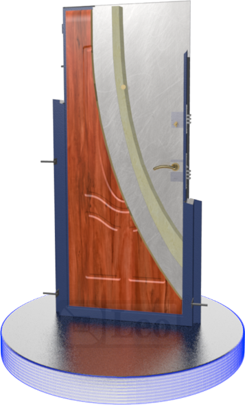

Дверной блок П2
Описание
Классическая конструкция двери с одним листом металла, рёбрами жесткости, утеплённая минеральной ватой. Соотношение цена-качество, а также хорошие потребительские свойства делают эту модель одной из наиболее популярных. М1 хорошо зарекомендовала себя в качестве входной двери в квартиру. Модель отлично подойдёт для ограничения доступа и теплозвукоизоляции помещений с небольшим количеством посетителей, а декорированная современными отделками снаружи и изнутри не уступит более дорогой М2. Однако, если дверь будет утановлена в месте с большим проходом посетителей, то лучше обратить внимание на модели М2 и П2. Опционально, косяк можно утеплить пенополиуретаном, вместо стандартной минеральной ваты. Такой утеплитель полностью заполняет все полости косяка, что существенно повышает тепло- и шумоизоляцию.
Характеристики
- Один лист металла Т=1.5 мм
- Предельный стандартный размер 2100×980 мм
- Утеплитель — минеральная вата в косяке и полотне
- Полимерное порошковое покрытие
| Типоразмер | Остаток на складе |
|---|---|
| 2050х880 | 18 |
| 2100х980 | 15 |
Подробное описание
- Петли на шаре
- Противосъёмный ригель хром 2 шт.
- Декоративная отделка (панель)
- Дверная коробка с уплотнителем и заполнением минеральной ватой
- Монтажное ухо с монтажным штырём 6 компл.
- Наружный лист металла Т=1.5 мм
- Рёбра жесткости 2 или 3 шт. (в зависимости от ширины полотна)
- Пластины против осадки утеплителя
- Глазок Армадилло
- Дверное полотно с уплотнителем и заполнением минеральной ватой
- Дополнительный замок
- Фиксатор замка
- Усилитель для крепления ручки
- Ручка фалевая
- Основной замок с защёлкой
- Два контура уплотнителя
- Минеральная вата